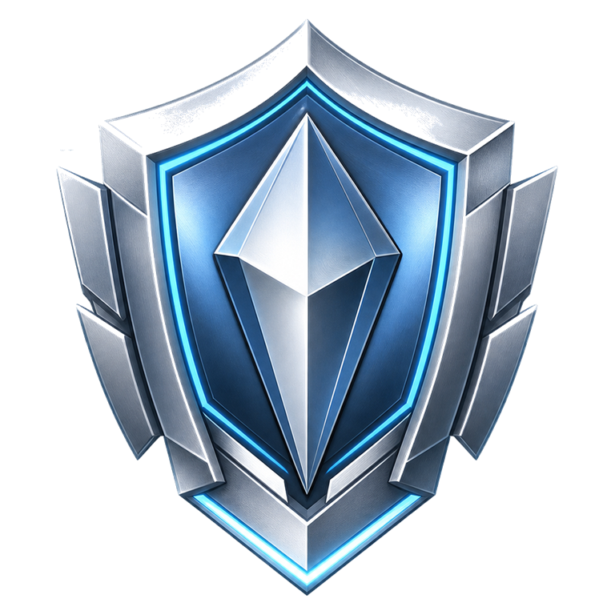

Daily Proof
Home starts with the next useful action: train, recover, maintain the streak, or review progression.
Native Android rebuild
A local-first workout tracker for logged training, recovery signals, and earned progression.
Daily proof
Training systems
Log work, read recovery, and keep progression tied to training history instead of isolated stats.
Home starts with the next useful action: train, recover, maintain the streak, or review progression.
Muscle readiness and workload patterns guide the next session without hiding the raw training context.
Rank, level, XP, badges, and integrity stay tied to verified training history.
Gamification without noise
Graphite, Iron, Steel, Titanium, Obsidian, Iridium, Apex, and Aether remain tied to consistency and proof.

Coming next
The public page is a preview of the product direction. The native Android source will arrive when the migration branch is clean and ready to publish.